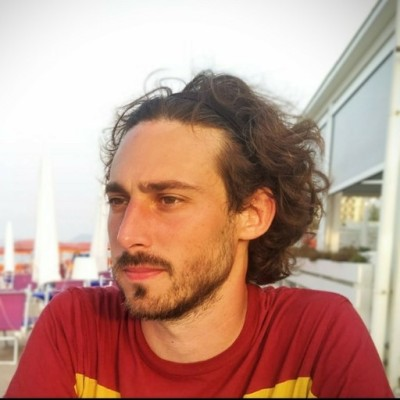

Marco Bassi
Software Developer, Football Refeeree, European. Not necessarily in this order.
Viale Pavia, 14 - 26900 Lodi (Italy)
+39 333 4912439
marco.bassi.it@gmail.com | poltro90.mb@gmail.com
www.marcobassi.com
Work Experience
March 2016 - now
Fullstack Software Engineer
Empatica Srl - via Stendhal, 36, 20144 Milan (Italy)
Software development:
- Development and maintenance of API
- Integration with external services
- Go library for shipping labels service EasyPost, Easypost Go
- Web development
- Developing customer related products
- Consumer: Myembrace
- Research and Enterprise: soon to be publicly released
- Angular Framework
- Dashboards (Highcharts)
- Online payments (Stripe)
- Analytics
- OPS, logistics and CMS
- Developing customer related products
Responsibilities:
- Defining and planning tasks based on customer needs and requirements
- Owner of frontend products
- Deliver mobile first approach on each product
html
css
go
js
typescript
July 2013 - March 2016
Software Engineer. Team leader
IBM Ireland - Damastown Technology Center, Dublin (Éire/Ireland)
Software development:
- Web development for IBM's SalesConnect web application.
- Deployment automation with PHP and AIX bash, integrated within a deployment pipeline with Jenkins, UrbanCode
Deploy and RTC to achieve a complete CI/CD environment.
- Optimization of deployment automation scripts in terms of performance, reliability (user error proof, disaster recovery) and user experience.
- Creator, architect and developer for IBM UrbanCode PHP CLI Tool, plugin for deployment automation software IBM UrbanCode Deploy
Responsibilities:
- Technical team leader
- Definition of new requirements and functionalities to be implemented
- Leading product development
- Feasibility analysis and estimation
- Development and test planning
- Organize work in stories and tasks
- Task writeup, estimation, assignment
- Product showcasing (local and global team)
- Workshops, presentations, dry runs, hackathons
- Working on a team adopting Agile and Scrum methodologies.
- Traineed by a certified Scrum Master
Side projects:
- Badger – Web, Android and iOS application for NFC enabled phones to read and share business cards from IBM badges
- BadgerEvents – Web, Android and iOS application for managing events and user registration though NFC badges.
bash
php
html
js
css
January 2012 - July 2013
Freelance Software Developer
Self employed
Covering multiple web-based projects. Few picks:
- Milano Summer School – Event web registration System Architecture - Milan (IT)
- Developed for the Municipality of Milan.
- Design, development and implementation of a web based platform for user registration and management, event registration and management for the Milano Summer School program.
- Social Lab - Bologna (IT)
- Architecture design, development and implementation of multi-author solution and user generated content.
- Development of new basic functions based on Twitter API for multiple projects.
- Hallimarsh s.r.o - Berlin (DE)
- Architecture design, development and implementation of multi-author solution and user generated content.
- Development of new basic functions based on Google Maps API for multiple projects.
- University of Milan - Milan (IT)
- Web designer and developer for web application ManagESN for managing Erasmus students at University of Milan. IT consultant and manager.
- AIA - Associazione Italiana Arbitri (Italian Football Referee Association) - Lodi (IT)
- IT, network, website and social managing.
php
html
css
js
sql
Education And Training
September 2009 - April 2013
BSc Computer Science
University of Milan, Milan (Italy)
Analysis, design, development, and management of complex computing systems.
Thesis: "Geolocation as tool to make business into geo-local market"
August 2010 - January 2012
Erasmus LLP
Metropolia University of Applied Sciences, Helsinki (Finland) Erasmus exchange program.
Fields covered:
- Web development using PHP, javascript and Java.
- Electrical signal processing.
- Software design, development and management.
September 2004 - July 2009
Scientific High School
Liceo Scientifico "G.Gandini", Lodi (Italy)
"Brocca" experimental course. Fields covered:
- Physics, chemistry and biology labs
- Project presentation at confences and meetings
- Teamwork with time pressure and goals for humane/scientific projects
Personal Skills
Mother Toungue
Italian
Other Languages
English
| UNDERSTANDING | SPEAKING | WRITING | ||
|---|---|---|---|---|
| Listening | Reading | Spoken Interaction | Spoken Production | |
| C2 | C2 | C2 | C2 | C2 |
Levels: A1 and A2 Basic user - B1 and B2 Independent
user - C1 and C2 Proficient user
Common European Framework of Reference for Languages
Common European Framework of Reference for Languages
Communication Skills
Directly dealing with customers, negotiating requirements and features.
Ability to interact, negotiate and moderate with objectivity and authority with guys and sports authorities, thanks
to a five years experience as football referee, during which I also progressed category.
Ability to speak in public.
Organisational / Managerial skills
Confident in working with large as well as small scale teams. Team building.
Driving Licence
B
Additional Information
- Developer of Wordpress plugin TweetSearchToPost: search and convert tweets into geolocated Wordpress posts.
- Football referee in Italian Referee Association (A.I.A.) since December 2005.
- Passion for Italian and American Punk-Rock music, such as Foo Fighters and I Ministri.
- Beer stuff collector.
- Passion for yellow books, particularly Sherlock Holmes stories.
- Good traveller. Last cities visited: Lisbon, London, Berlin, Dublin, Paris, Scandinavia and many more
- I love cooking!